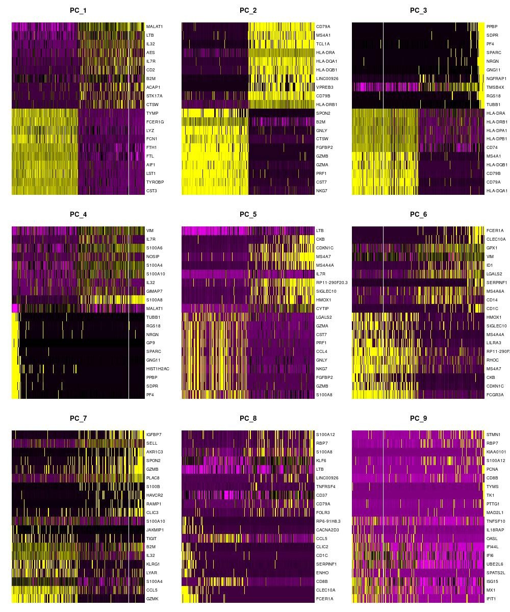
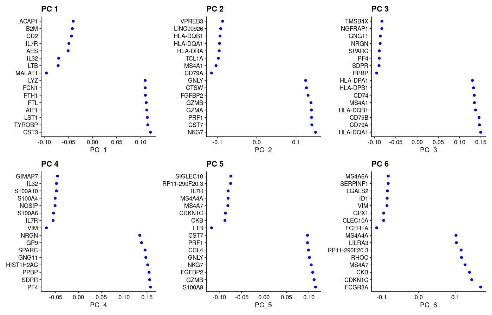
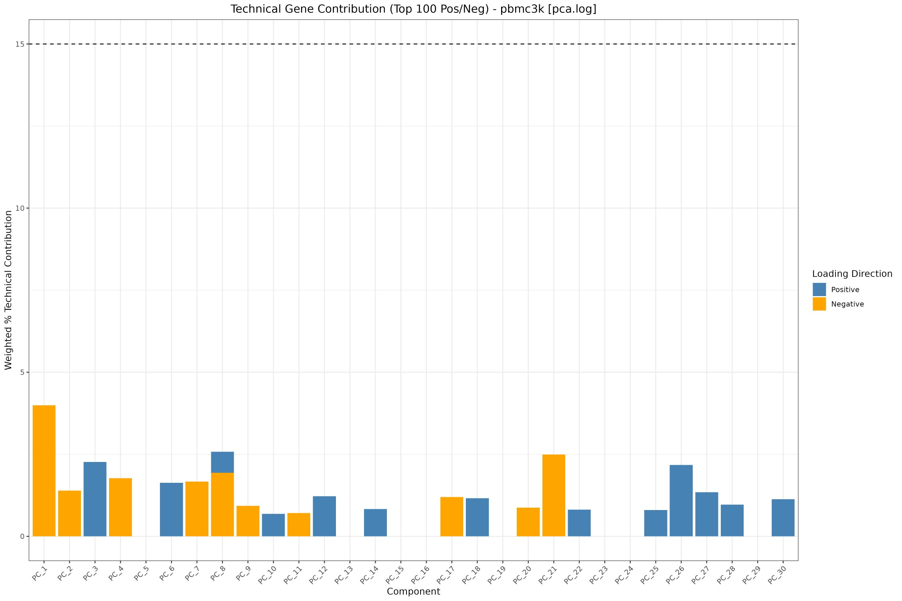
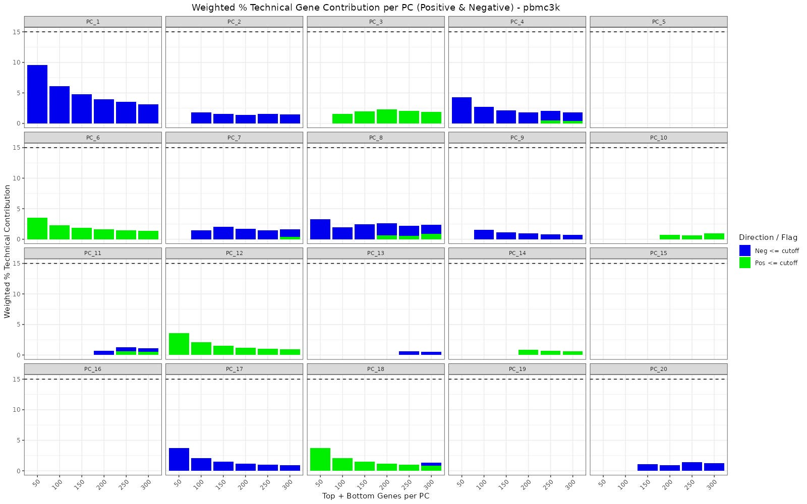
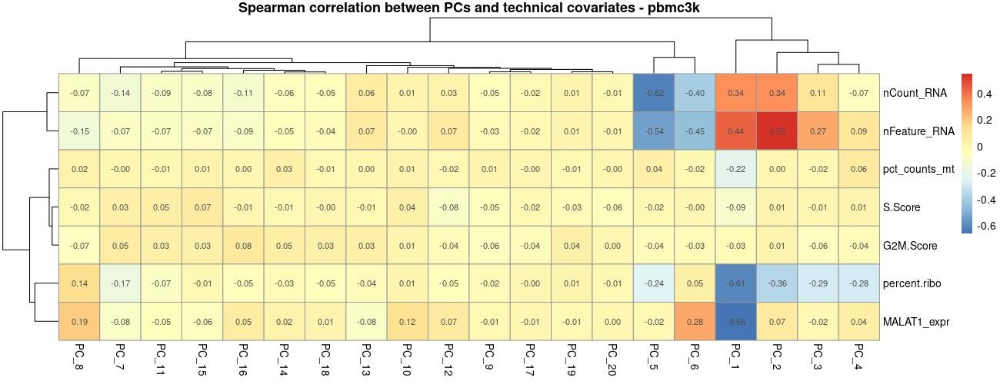

Diagnostic and Variable Evaluation
Chomchon Uansiri
2026-10-06
Source:vignettes/OHMmy-diagnostics-evaluation.Rmd
OHMmy-diagnostics-evaluation.RmdOverview
Before trusting a clustering, check what the principal components actually capture. Two questions matter:
- How many PCs carry biological signal?
- Are any PCs driven by technical artefacts such as mitochondrial or ribosomal transcripts, nuclear lncRNAs, sequencing depth or cell cycle?
OHMmy provides five diagnostic functions. Each saves its figures to disk so the same checks can run unattended on an HPC node.
| Function | Question it answers |
|---|---|
generate_dimheatmaps() |
Which genes and cells drive each PC? |
plot_vizdimloadings() |
What are the gene loadings of each PC? |
plot_technical_contribution() |
What fraction of each PC’s top loadings is technical? |
plot_stacked_technical_contribution() |
Does that fraction change with loading depth? |
plot_pc_metadata_correlation() |
Do PC scores correlate with QC covariates? |
library(Seurat)
library(OHMmy)
source("ohmmy-vignette-helpers.R")
pbmc <- load_pbmc3k_ohmmy() # built in "Data Processing, Integration, and Clustering"
out_dir <- file.path(tempdir(), "OHMmy-diagnostics")
dir.create(out_dir, recursive = TRUE, showWarnings = FALSE)The diagnostics use the pre-integration PCA
(pca.log), which still carries gene loadings.
1. Variance and loadings
Elbow plot
ElbowPlot(pbmc, reduction = "pca.log", ndims = 40)The standard deviation drops steeply over the first 7 PCs and is essentially flat after PC 10. The 20 PCs used downstream in the processing article are a conservative choice for pbmc3k.
Dimension heatmaps
generate_dimheatmaps() splits the PCs into windows
(pc_windows) and saves one balanced DimHeatmap
per window. Each window is wrapped in error handling, so one failed plot
does not stop a batch run.
generate_dimheatmaps(
seurat_obj = pbmc,
sample_name = "pbmc3k",
reduction = "pca.log",
pc_windows = list(1:9, 10:18),
output_dir = out_dir,
nfeatures = 20,
cells = 300,
width_in = 10,
height_in = 12,
res = 100
)
PC 1 separates myeloid genes (LYZ, FCN1, CST3) from lymphoid genes (IL7R, LTB). Note that MALAT1 is among its top lymphoid loadings, which the technical-contribution checks below quantify. PC 2 captures the cytotoxic NK/CD8 programme against B-cell genes, PCs 3 and 4 platelets, and PC 9 a mixture of interferon-stimulated and S-phase genes.
Loading plots
plot_vizdimloadings() stitches one
VizDimLoadings panel per PC into a grid and returns the
names of any windows that failed. An empty vector means everything was
plotted.
failed <- plot_vizdimloadings(
seurat_obj = pbmc,
sample_name = "pbmc3k",
reduction = "pca.log",
pc_windows = list(1:6),
output_dir = out_dir,
nfeatures = 15,
width_in = 14,
height_in = 9,
res = 100,
ncol = 3
)
failed
#> character(0)
2. Quantifying technical gene contributions
plot_technical_contribution() takes the top
n_top_genes / 2 positive and negative loadings of each PC
and computes the loading-weighted percentage that comes
from genes matching technical_keywords. A dashed line marks
the cutoff above which a PC deserves a closer look.
tech_keys <- c("^MT-", "^RPL", "^RPS", "^IG[HKL]", "MALAT1", "NEAT1", "XIST")
plot_technical_contribution(
seurat_obj = pbmc,
sample_name = "pbmc3k",
reduction = "pca.log",
technical_keywords = tech_keys,
max_pcs = 30,
n_top_genes = 200,
cutoff = 15,
output_dir = out_dir
)
In pbmc3k every PC stays well below the 15 % cutoff. The largest value is a few percent on the negative side of PC 1. This is expected, because PCA loadings only exist for the variable features, and mitochondrial and ribosomal genes rarely pass HVG selection after QC filtering. In noisier data, such as stressed tissue, low-quality droplets or nuclei, a PC far above the line is a strong hint to regress the corresponding covariate.
The percentage can change sharply with the number of genes
considered. plot_stacked_technical_contribution() repeats
the calculation over a sequence of depths (gene_depths) and
facets the result by PC. Bars above the cutoff are highlighted, so a PC
that is “clean” at the top but technical deeper down is easy to
spot.
plot_stacked_technical_contribution(
seurat_obj = pbmc,
sample_name = "pbmc3k",
reduction = "pca.log",
technical_keywords = tech_keys,
gene_depths = seq(0, 300, by = 50),
max_pcs = 20,
cutoff = 15,
output_dir = out_dir,
plot_width = 16,
plot_height = 10,
dpi = 100
)
3. Correlating PCs with QC covariates
plot_pc_metadata_correlation() computes Spearman
correlations between each PC’s cell embeddings and the metadata columns
in vars_to_test, then draws a clustered
pheatmap with the coefficients printed in each cell.
Expression of single nuclear transcripts, such as MALAT1, can
be tested by first copying it into the metadata.
pbmc$MALAT1_expr <- FetchData(pbmc, vars = "MALAT1", layer = "data")[, 1]
plot_pc_metadata_correlation(
seurat_obj = pbmc,
sample_name = "pbmc3k",
vars_to_test = c("nCount_RNA", "nFeature_RNA", "pct_counts_mt", "percent.ribo",
"S.Score", "G2M.Score", "MALAT1_expr"),
reduction = "pca.log",
n_pcs = 20,
output_dir = out_dir,
plot_width_in = 13,
plot_height_in = 5,
res_dpi = 100
)
Interpreting the diagnostics
- A PC whose top loadings are dominated by
MT-,RPL/RPSor lncRNA genes, and whose scores correlate strongly (|rho| > 0.5) withpct_counts_mt,percent.riboornCount_RNA, is technical. Regress that covariate inProcessSeuratLOG(vars_to_regress = ...), switch toProcessSeuratSCT(), or leave the PC out ofdims. - Ribosomal genes often load on lymphocyte-versus-myeloid PCs in PBMCs simply because naive T cells are ribosome-rich. Before removing such a PC, check whether it also separates known cell types, for example with the dimension heatmaps above.
- Correlation with
S.ScoreorG2M.Scoreindicates a cycling compartment. Regress the cell-cycle difference only when proliferation is not of interest.
Session information
sessionInfo()
#> R version 4.6.1 (2026-06-24)
#> Platform: x86_64-pc-linux-gnu
#> Running under: Ubuntu 22.04.5 LTS
#>
#> Matrix products: default
#> BLAS: /usr/lib/x86_64-linux-gnu/openblas-pthread/libblas.so.3
#> LAPACK: /usr/lib/x86_64-linux-gnu/openblas-pthread/libopenblasp-r0.3.20.so; LAPACK version 3.10.0
#>
#> locale:
#> [1] LC_CTYPE=C.UTF-8 LC_NUMERIC=C LC_TIME=C.UTF-8
#> [4] LC_COLLATE=C.UTF-8 LC_MONETARY=C.UTF-8 LC_MESSAGES=C.UTF-8
#> [7] LC_PAPER=C.UTF-8 LC_NAME=C LC_ADDRESS=C
#> [10] LC_TELEPHONE=C LC_MEASUREMENT=C.UTF-8 LC_IDENTIFICATION=C
#>
#> time zone: UTC
#> tzcode source: system (glibc)
#>
#> attached base packages:
#> [1] stats graphics grDevices utils datasets methods base
#>
#> other attached packages:
#> [1] OHMmy_1.0.2 Seurat_5.6.0 SeuratObject_5.4.0 sp_2.2-3
#>
#> loaded via a namespace (and not attached):
#> [1] RColorBrewer_1.1-3 jsonlite_2.0.0 magrittr_2.0.5
#> [4] spatstat.utils_3.2-5 farver_2.1.2 rmarkdown_2.32
#> [7] fs_2.1.0 ragg_1.5.2 vctrs_0.7.3
#> [10] ROCR_1.0-12 memoise_2.0.1 spatstat.explore_3.8-3
#> [13] rstatix_1.1.0 progress_1.2.3 htmltools_0.5.9
#> [16] broom_1.0.13 Formula_1.2-6 sass_0.4.10
#> [19] sctransform_0.4.3 parallelly_1.48.0 KernSmooth_2.23-26
#> [22] bslib_0.12.0 htmlwidgets_1.6.4 desc_1.4.3
#> [25] ica_1.0-3 plyr_1.8.9 plotly_4.12.1
#> [28] zoo_1.9-1 cachem_1.1.0 igraph_2.3.4
#> [31] mime_0.13 lifecycle_1.0.5 pkgconfig_2.0.3
#> [34] Matrix_1.7-5 R6_2.6.1 fastmap_1.2.0
#> [37] fitdistrplus_1.2-6 future_1.76.0 shiny_1.14.0
#> [40] digest_0.6.39 patchwork_1.3.2 tensor_1.5.1
#> [43] RSpectra_0.16-2 irlba_2.4.1 textshaping_1.0.5
#> [46] ggpubr_1.0.0 labeling_0.4.3 progressr_1.0.0
#> [49] spatstat.sparse_3.2-0 httr_1.4.9 polyclip_1.10-7
#> [52] abind_1.4-8 compiler_4.6.1 withr_3.0.3
#> [55] S7_0.2.2 backports_1.5.1 viridis_0.6.5
#> [58] carData_3.0-6 fastDummies_1.7.6 ggforce_0.5.0
#> [61] ggsignif_0.6.4 MASS_7.3-65 tools_4.6.1
#> [64] lmtest_0.9-40 otel_0.2.0 httpuv_1.6.17
#> [67] future.apply_1.20.2 goftest_1.2-3 glue_1.8.1
#> [70] nlme_3.1-169 promises_1.5.0 grid_4.6.1
#> [73] Rtsne_0.17 cluster_2.1.8.2 reshape2_1.4.5
#> [76] generics_0.1.4 gtable_0.3.6 spatstat.data_3.1-9
#> [79] tidyr_1.3.2 hms_1.1.4 data.table_1.18.6.1
#> [82] tidygraph_1.3.1 car_3.1-5 spatstat.geom_3.8-3
#> [85] RcppAnnoy_0.0.23 ggrepel_0.9.8 RANN_2.6.3
#> [88] pillar_1.11.1 stringr_1.6.0 spam_2.11-4
#> [91] RcppHNSW_0.7.0 later_1.4.8 splines_4.6.1
#> [94] tweenr_2.0.3 dplyr_1.2.1 lattice_0.22-9
#> [97] survival_3.8-6 deldir_2.0-4 tidyselect_1.2.1
#> [100] miniUI_0.1.2 pbapply_1.7-5 knitr_1.52
#> [103] gridExtra_2.3.1 SoupX_1.6.2 scattermore_1.2
#> [106] xfun_0.61 graphlayouts_1.2.5 matrixStats_1.5.0
#> [109] pheatmap_1.0.13 leidenbase_0.1.37 stringi_1.8.9
#> [112] yaml_2.3.12 evaluate_1.0.5 codetools_0.2-20
#> [115] ggraph_2.2.2 tibble_3.3.1 cli_3.6.6
#> [118] uwot_0.2.5 xtable_1.8-8 reticulate_1.47.0
#> [121] systemfonts_1.3.2 jquerylib_0.1.4 Rcpp_1.1.2
#> [124] globals_0.19.1 spatstat.random_3.5-2 png_0.1-9
#> [127] spatstat.univar_3.2-0 parallel_4.6.1 pkgdown_2.2.1
#> [130] ggplot2_4.0.3 prettyunits_1.2.0 dotCall64_1.2
#> [133] jpeg_0.1-11 listenv_1.1.0 viridisLite_0.4.3
#> [136] scales_1.4.0 ggridges_0.5.7 crayon_1.5.3
#> [139] purrr_1.2.2 rlang_1.3.0 cowplot_1.2.0